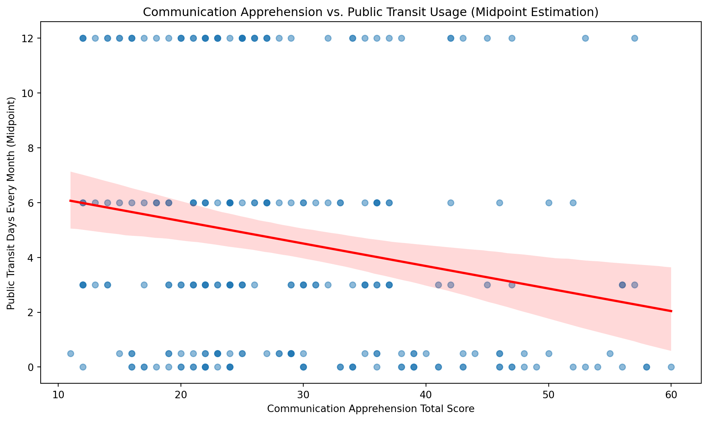
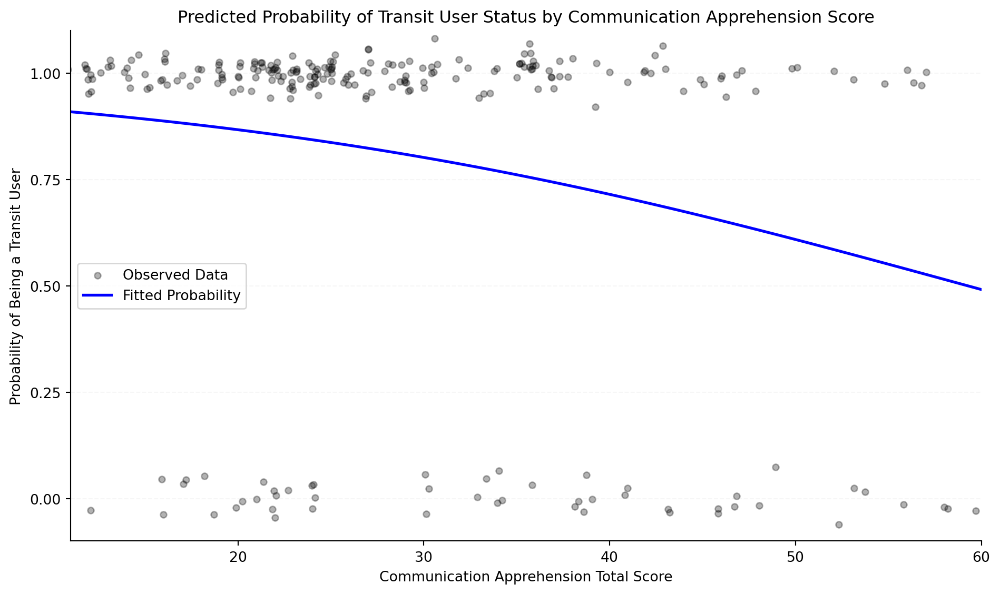
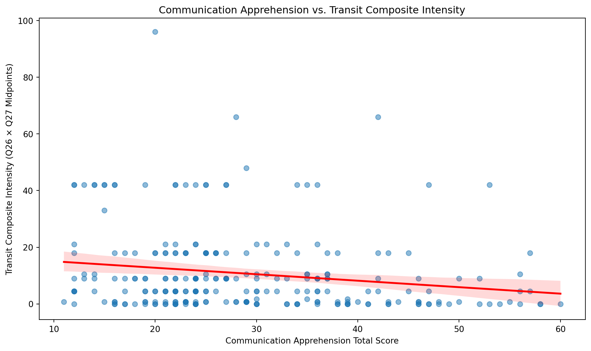

import pandas as pd
import numpy as np
import statsmodels.api as sm
import seaborn as sns
import matplotlib.pyplot as plt
# Load the data
df = pd.read_csv('original_data/merged_data.csv')
# Define the Likert scale mapping
likert_mapping = {
"Strongly disagree": 1,
"Somewhat disagree": 2,
"Neither agree nor disagree": 3,
"Somewhat agree": 4,
"Strongly agree": 5
}
# Communication apprehension items to recode
communication_apprehension_items = ['Q1', 'Q2', 'Q3', 'Q4', 'Q5', 'Q6', 'Q13', 'Q14', 'Q15', 'Q16', 'Q17', 'Q18']
# Items to reverse-code (Q2, Q4, Q6, Q14, Q16, Q17)
reverse_code_items = ['Q2', 'Q4', 'Q6', 'Q14', 'Q16', 'Q17']
# Items to direct-code (Q1, Q3, Q5, Q13, Q15, Q18)
direct_code_items = ['Q1', 'Q3', 'Q5', 'Q13', 'Q15', 'Q18']
# Recode communication apprehension items
for item in communication_apprehension_items:
if item in df.columns:
df[item] = df[item].map(likert_mapping)
# Reverse-code items
for item in reverse_code_items:
if item in df.columns:
df[item] = 6 - df[item]
# Compute total communication apprehension score (sum of 12 items)
communication_apprehension_columns = [col for col in communication_apprehension_items if col in df.columns]
df['communication_apprehension_score'] = df[communication_apprehension_columns].sum(axis=1)
# Recode public transit usage frequency (Q26)
# Approach 1: Midpoint estimation for days per month (continuous DV for OLS)
transit_midpoint_mapping = {
"Never": 0.0,
"0-1 days a month": 0.5,
"2-4 days a month": 3.0,
"4-8 days a month": 6.0,
"8 or more days a month": 12.0
}
if 'Q26' in df.columns:
df['public_transit_days'] = df['Q26'].map(transit_midpoint_mapping)
# Approach 2: Binary indicator for transit usage (binary DV for Logistic Regression)
if 'Q26' in df.columns:
df['is_transit_user'] = df['Q26'].apply(lambda x: 0 if x == "Never" else 1 if pd.notna(x) else np.nan)
# Approach 3: Composite intensity score (Q26 midpoint × Q27 midpoint)
rides_midpoint_mapping = {
"1-2 rides in a typical day": 1.5,
"3-4 rides in a typical day": 3.5,
"5-6 rides in a typical day": 5.5,
"7 or more rides in a typical day": 8.0
}
if 'Q27' in df.columns:
df['rides_per_day'] = df['Q27'].map(rides_midpoint_mapping)
if 'Q26' in df.columns and 'Q27' in df.columns:
df['transit_composite'] = df['public_transit_days'] * df['rides_per_day']
# Never users have zero transit intensity even if Q27 is missing
df.loc[df['Q26'] == 'Never', 'transit_composite'] = 0.0
# Drop NA values for relevant variables
df_clean = df.dropna(subset=['communication_apprehension_score', 'public_transit_days', 'is_transit_user', 'transit_composite'])The Relationship Between Communication Apprehension and Public Transportation Usage
Introduction
Communication apprehension is defined as an individual’s level of fear or anxiety associated with either real or anticipated communication with another person or persons (McCroskey 1977). This study examines whether individuals with higher levels of communication apprehension use public transportation less frequently, potentially due to the unavoidable social interaction and public scrutiny that shared transit environments entail compared to private transportation.
- H0 (Null Hypothesis): There is no relationship between communication apprehension and public transportation usage.
- H1 (Alternative Hypothesis): Individuals with higher levels of communication apprehension use public transportation less frequently than individuals with lower levels of communication apprehension.
Digital research methods enable us to collect and analyze survey data efficiently (Salganik 2019). Using survey responses, we investigate the relationship between communication apprehension scores and public transit usage.
Methods
Data Collection and Cleaning
We begin by loading the survey data and performing necessary cleaning operations.
Data Analysis
Dependent Variable Coding Strategy
We avoid using standard contiguous integer mapping (0-4) for the public transit frequency variable because the response categories represent non-equal intervals. For example, the interval between “Never” (0) and “0-1 days a month” (1) represents approximately 1 day, while the interval between “4-8 days a month” (3) and “8 or more days a month” (4) could represent many more days. To address this, we implement three distinct analytical approaches:
- Approach 1 (OLS with Midpoint Estimation): Maps Q26 categories to estimated midpoints of actual days per month, creating a continuous dependent variable suitable for OLS regression
- Approach 2 (Logistic Regression with Binary DV): Creates a binary indicator distinguishing transit users from non-users, suitable for logistic regression
- Approach 3 (OLS with Composite Intensity Score): Multiplies the Q26 midpoint (days per month) by the Q27 midpoint (rides on a typical day) to create a continuous intensity score that captures both frequency and volume of transit use
Comparing these approaches allows us to assess whether the relationship between communication apprehension and transit usage is robust across different operationalizations of the dependent variable. Communication apprehension is measured as the total score across the 12 scale items (range 12–60), rather than an item average.
Descriptive Statistics
# Generate summary descriptive statistics
summary_stats = df_clean[['communication_apprehension_score', 'public_transit_days', 'is_transit_user', 'transit_composite']].describe()
print(summary_stats.to_markdown())| | communication_apprehension_score | public_transit_days | is_transit_user | transit_composite |
|:------|-----------------------------------:|----------------------:|------------------:|--------------------:|
| count | 252 | 252 | 252 | 252 |
| mean | 28.8333 | 4.60317 | 0.797619 | 10.7381 |
| std | 11.3209 | 4.48828 | 0.402574 | 14.3766 |
| min | 11 | 0 | 0 | 0 |
| 25% | 21 | 0.5 | 1 | 0.75 |
| 50% | 25.5 | 3 | 1 | 4.5 |
| 75% | 36 | 6 | 1 | 18 |
| max | 60 | 12 | 1 | 96 |Approach 1: OLS Regression with Midpoint Estimation
We conduct an ordinary least squares (OLS) regression using the midpoint-estimated days per month as a continuous dependent variable.
# Prepare data for regression
X = df_clean['communication_apprehension_score']
X = sm.add_constant(X) # Add constant term
y = df_clean['public_transit_days']
# Run OLS regression
model_ols = sm.OLS(y, X).fit()
# Display regression results
print(model_ols.summary()) OLS Regression Results
===============================================================================
Dep. Variable: public_transit_days R-squared: 0.043
Model: OLS Adj. R-squared: 0.039
Method: Least Squares F-statistic: 11.22
Date: Thu, 30 Jul 2026 Prob (F-statistic): 0.000936
Time: 15:27:10 Log-Likelihood: -729.91
No. Observations: 252 AIC: 1464.
Df Residuals: 250 BIC: 1471.
Df Model: 1
Covariance Type: nonrobust
====================================================================================================
coef std err t P>|t| [0.025 0.975]
----------------------------------------------------------------------------------------------------
const 6.9718 0.760 9.178 0.000 5.476 8.468
communication_apprehension_score -0.0821 0.025 -3.349 0.001 -0.130 -0.034
==============================================================================
Omnibus: 41.661 Durbin-Watson: 2.033
Prob(Omnibus): 0.000 Jarque-Bera (JB): 26.049
Skew: 0.654 Prob(JB): 2.21e-06
Kurtosis: 2.124 Cond. No. 85.0
==============================================================================
Notes:
[1] Standard Errors assume that the covariance matrix of the errors is correctly specified.# Create regression plot
plt.figure(figsize=(10, 6))
sns.regplot(x='communication_apprehension_score', y='public_transit_days', data=df_clean,
scatter_kws={'alpha': 0.5}, line_kws={'color': 'red'})
plt.xlabel('Communication Apprehension Total Score')
plt.ylabel('Public Transit Days Every Month (Midpoint)')
plt.title('Communication Apprehension vs. Public Transit Usage (Midpoint Estimation)')
plt.tight_layout()
plt.show()
Approach 2: Logistic Regression with Binary Dependent Variable
We conduct a logistic regression using a binary indicator of transit user status as the dependent variable.
# Prepare data for logistic regression
X_logit = df_clean['communication_apprehension_score']
X_logit = sm.add_constant(X_logit)
y_logit = df_clean['is_transit_user']
# Run logistic regression
model_logit = sm.Logit(y_logit, X_logit).fit()
# Display regression results
print(model_logit.summary())
# Calculate and display odds ratios
odds_ratios = pd.DataFrame({
'Variable': ['Intercept', 'Communication Apprehension Score'],
'Odds Ratio': np.exp(model_logit.params),
'Coefficient': model_logit.params,
'P-Value': model_logit.pvalues
})
print("\nOdds Ratios:")
print(odds_ratios.to_markdown(index=False))Optimization terminated successfully.
Current function value: 0.478605
Iterations 6
Logit Regression Results
==============================================================================
Dep. Variable: is_transit_user No. Observations: 252
Model: Logit Df Residuals: 250
Method: MLE Df Model: 1
Date: Thu, 30 Jul 2026 Pseudo R-squ.: 0.04979
Time: 15:27:10 Log-Likelihood: -120.61
converged: True LL-Null: -126.93
Covariance Type: nonrobust LLR p-value: 0.0003775
====================================================================================================
coef std err z P>|z| [0.025 0.975]
----------------------------------------------------------------------------------------------------
const 2.8325 0.465 6.092 0.000 1.921 3.744
communication_apprehension_score -0.0478 0.014 -3.526 0.000 -0.074 -0.021
====================================================================================================
Odds Ratios:
| Variable | Odds Ratio | Coefficient | P-Value |
|:---------------------------------|-------------:|--------------:|------------:|
| Intercept | 16.9878 | 2.8325 | 1.11699e-09 |
| Communication Apprehension Score | 0.953348 | -0.047775 | 0.000421592 |# Generate predicted probabilities across the observed total-score range
x_min = df_clean['communication_apprehension_score'].min()
x_max = df_clean['communication_apprehension_score'].max()
x_range = np.linspace(x_min, x_max, 100)
x_range_with_const = sm.add_constant(x_range)
predicted_probs = model_logit.predict(x_range_with_const)
# Add jitter to binary data points
np.random.seed(42) # For reproducibility
jitter_y = df_clean['is_transit_user'] + np.random.normal(0, 0.03, len(df_clean))
jitter_x = df_clean['communication_apprehension_score'] + np.random.normal(0, 0.2, len(df_clean))
# Create plot with minimal styling
plt.figure(figsize=(10, 6))
plt.scatter(jitter_x, jitter_y, color='black', alpha=0.3, s=20, label='Observed Data')
plt.plot(x_range, predicted_probs, 'b-', linewidth=2, label='Fitted Probability')
# Styling
plt.xlabel('Communication Apprehension Total Score')
plt.ylabel('Probability of Being a Transit User')
plt.title('Predicted Probability of Transit User Status by Communication Apprehension Score')
plt.ylim(-0.1, 1.1)
plt.yticks([0.00, 0.25, 0.50, 0.75, 1.00])
plt.xlim(x_min, x_max)
# Remove top and right spines
ax = plt.gca()
ax.spines['top'].set_visible(False)
ax.spines['right'].set_visible(False)
ax.spines['left'].set_color('black')
ax.spines['bottom'].set_color('black')
# Minimal grid
ax.grid(axis='y', alpha=0.1, linestyle='--')
plt.legend()
plt.tight_layout()
plt.show()
Approach 3: OLS Regression with Composite Intensity Score
We conduct an ordinary least squares (OLS) regression using a composite intensity score as the dependent variable. This score multiplies the Q26 midpoint (estimated days of transit use per month) by the Q27 midpoint (estimated rides on a typical transit day), capturing both how often and how intensively respondents use public transportation.
# Prepare data for regression
X_comp = df_clean['communication_apprehension_score']
X_comp = sm.add_constant(X_comp)
y_comp = df_clean['transit_composite']
# Run OLS regression
model_ols_composite = sm.OLS(y_comp, X_comp).fit()
# Display regression results
print(model_ols_composite.summary()) OLS Regression Results
==============================================================================
Dep. Variable: transit_composite R-squared: 0.032
Model: OLS Adj. R-squared: 0.029
Method: Least Squares F-statistic: 8.363
Date: Thu, 30 Jul 2026 Prob (F-statistic): 0.00417
Time: 15:27:10 Log-Likelihood: -1024.7
No. Observations: 252 AIC: 2053.
Df Residuals: 250 BIC: 2060.
Df Model: 1
Covariance Type: nonrobust
====================================================================================================
coef std err t P>|t| [0.025 0.975]
----------------------------------------------------------------------------------------------------
const 17.3260 2.447 7.082 0.000 12.507 22.145
communication_apprehension_score -0.2285 0.079 -2.892 0.004 -0.384 -0.073
==============================================================================
Omnibus: 131.394 Durbin-Watson: 1.999
Prob(Omnibus): 0.000 Jarque-Bera (JB): 603.370
Skew: 2.180 Prob(JB): 9.55e-132
Kurtosis: 9.202 Cond. No. 85.0
==============================================================================
Notes:
[1] Standard Errors assume that the covariance matrix of the errors is correctly specified.# Create regression plot
plt.figure(figsize=(10, 6))
sns.regplot(x='communication_apprehension_score', y='transit_composite', data=df_clean,
scatter_kws={'alpha': 0.5}, line_kws={'color': 'red'})
plt.xlabel('Communication Apprehension Total Score')
plt.ylabel('Transit Composite Intensity (Q26 × Q27 Midpoints)')
plt.title('Communication Apprehension vs. Transit Composite Intensity')
plt.tight_layout()
plt.show()
Results
The descriptive statistics in Table 1 provide an overview of the distribution of communication apprehension total scores and public transit measures in our sample (N = 252). All 252 respondents in the raw dataset were retained: two respondents left Q27 blank, but because both had answered “Never” to Q26, their transit composite score was coded as 0 rather than dropped, so no respondents were excluded from the final analytic sample due to missing data.
The OLS regression results presented in Table 2 indicate the strength and direction of the relationship between communication apprehension and public transit days when using midpoint estimation. As shown in Figure 1, the visualization displays the individual data points along with the fitted regression line, allowing us to assess the pattern of the relationship. Communication apprehension significantly predicted transit usage, b = -0.08, SE = 0.02, t(250) = -3.35, p < .001, 95% CI [-0.13, -0.03], and the model explained a small but significant proportion of variance in transit days, R² = .04, F(1, 250) = 11.22, p < .001.
The logistic regression results in Table 3 show the odds ratios and model fit metrics for predicting transit user status from communication apprehension score. This binary approach provides an alternative perspective on the relationship by focusing on whether individuals use public transit at all, rather than the frequency of use. As shown in Figure 2, the predicted probability curve illustrates how the likelihood of being a transit user changes across the range of communication apprehension scores. Communication apprehension significantly predicted the odds of being a transit user, b = -0.05, SE = 0.01, z = -3.53, p < .001, OR = 0.95, 95% CI [0.93, 0.98], such that each one-point increase in the total communication apprehension score was associated with a 4.7% decrease in the odds of using public transit. The model fit was significant relative to the null model, χ²(1) = 12.64, R² = .05.
The OLS regression results in Table 4 examine the relationship using the composite intensity score (Q26 midpoint × Q27 midpoint). As shown in Figure 3, this third approach incorporates both monthly frequency and daily ride volume, providing a more complete operationalization of transit usage intensity. Communication apprehension again significantly predicted transit intensity, b = -0.23, SE = 0.08, t(250) = -2.89, 95% CI [-0.38, -0.07], R² = .03, F(1, 250) = 8.36, p = .004.
Across all three operationalizations of the dependent variable, communication apprehension total score was a statistically significant, negative predictor of public transit usage.
Discussion
This study investigated whether individuals with higher levels of communication apprehension use public transportation less frequently. The analysis provides insights into the potential behavioral patterns associated with communication apprehension in the context of transportation choices.
Taken together, these results indicate that the negative relationship between communication apprehension and public transit usage is robust across three distinct operationalizations of the dependent variable—continuous frequency, binary usage status, and composite intensity—although the effect sizes were modest in each case. This consistency across models strengthens confidence that the observed association is not an artifact of how the dependent variable was coded, while the small effect sizes suggest that communication apprehension is only one of several factors likely to influence public transportation use.
Future research could expand on these findings by examining additional factors that may influence this relationship, such as urban vs. rural settings, availability of alternative transportation options, and specific communication apprehension triggers related to public transit environments.
References
McCroskey, James C. 1977. “Oral Communication Apprehension: A Summary of Recent Theory and Research.” Human Communication Research 4 (1): 78–96.
Salganik, Matthew J. 2019. Bit by Bit: Social Research in the Digital Age. Princeton University Press.